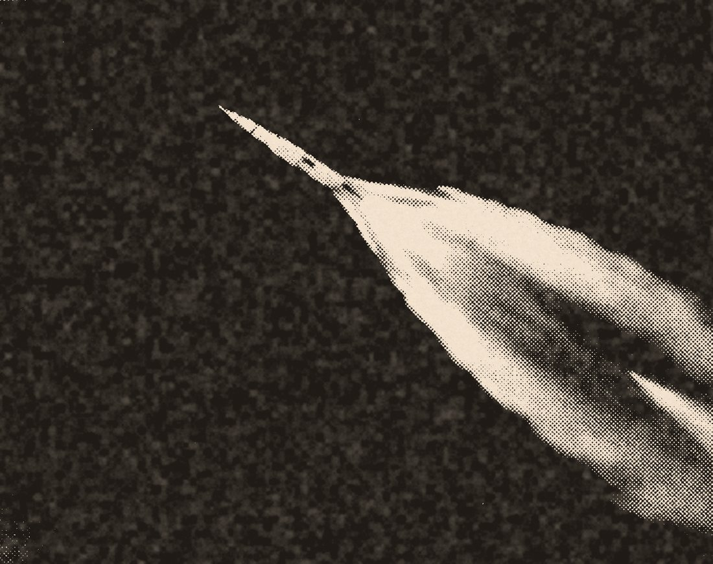
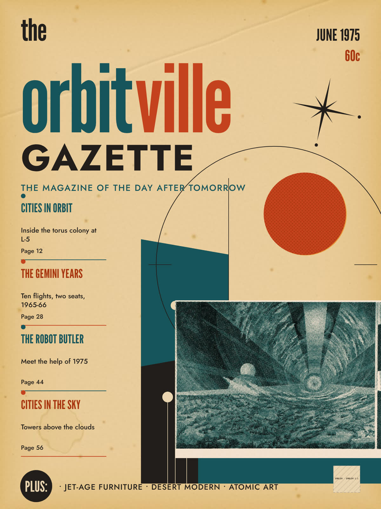
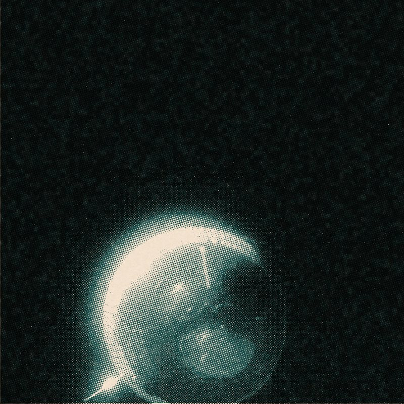
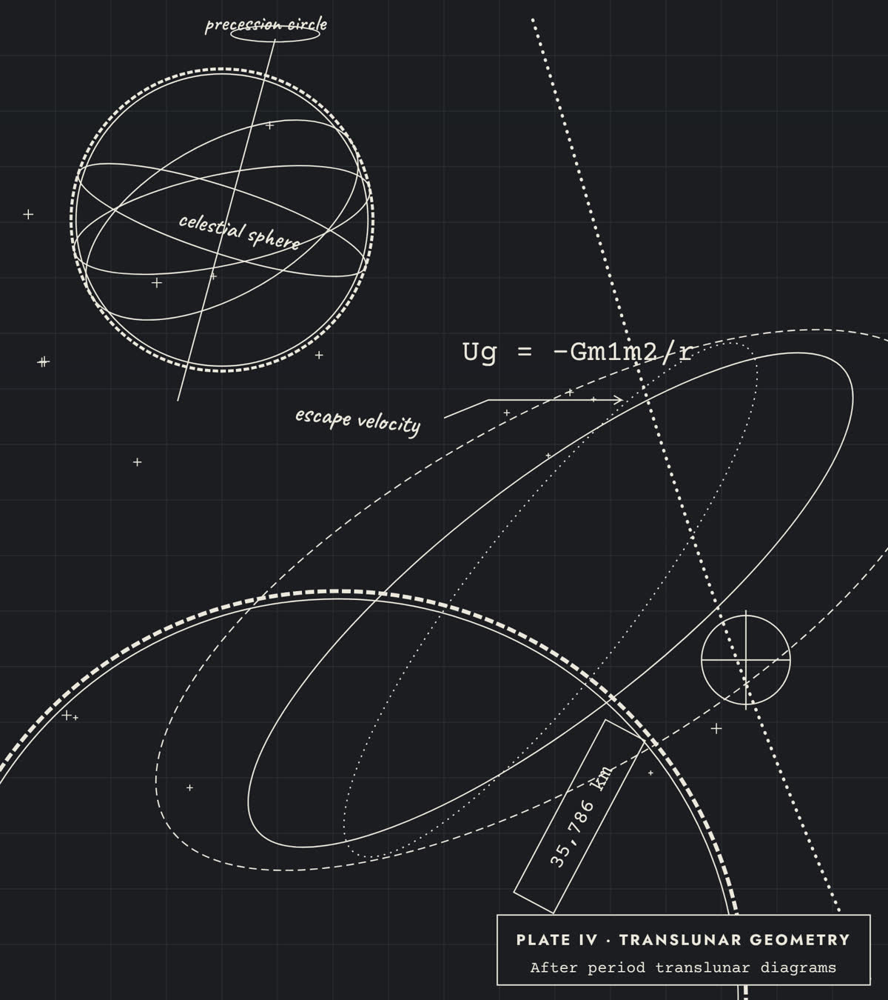

SPACEPORT-LOBBY · 1600×1000 · art-tasks/spaceport-lobby.md
Room 1 · Covers
- Service:
- GUIDED TOURS AT 11 AND 15
- Serving:
- SKYWATCHERS OF ALL AGES
Halcyon Survey Office presents
Print, plans and press passes from the first space race, 1957–1975.
Plan your visit
Gallery 4 · open daily · 10:00–18:00
In this exhibition
The magazine of the day after tomorrow, on the wall
Forty magazine covers that promised kitchens on the Moon.
Room 1
Typed timelines, minute by minute, pencil in the margins.
Room 2
Cloth-bound data books with one swooping line.
Room 3
Press credentials from the launch sites.
Room 4

MCC-H

see Room 2
| Mission | Edition | Date | Time | Day/Rev | Page |
|---|---|---|---|---|---|
| ORBITAL AGE | FINAL | NOV 7 | 10:00-18:00 | DAILY | 1-1 |

Ug = -Gm1m2/r
Fall around the Earth fast enough and the ground curves away beneath you. At 7.8 km/s, low orbit; at 11 km/s, the Moon.
escape velocity